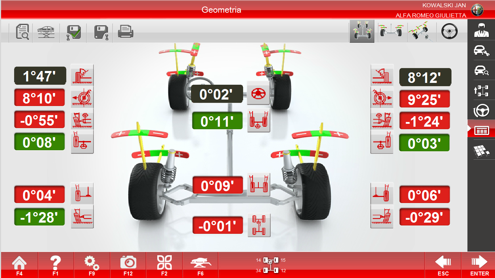
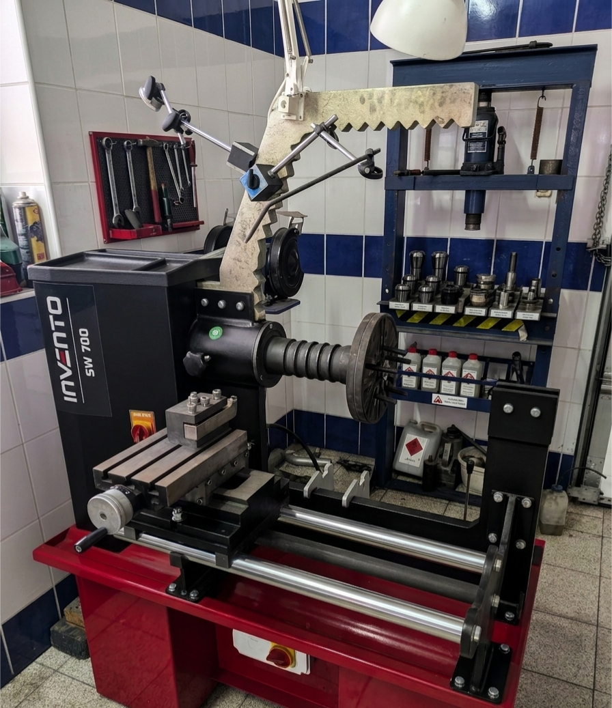
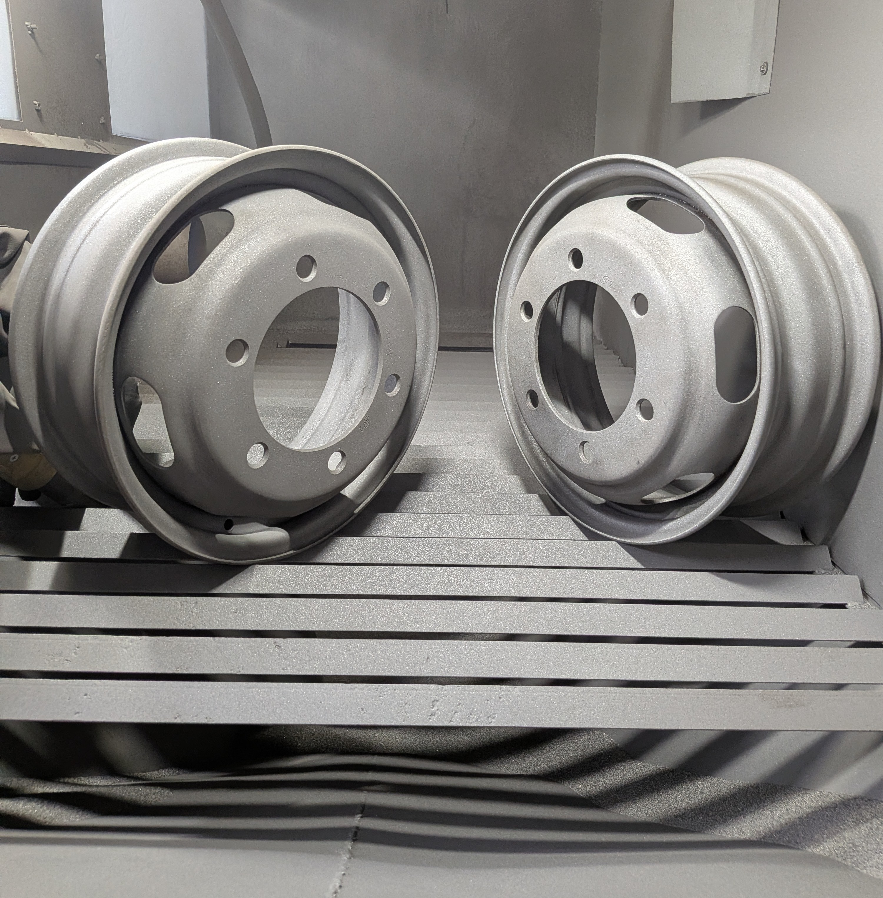
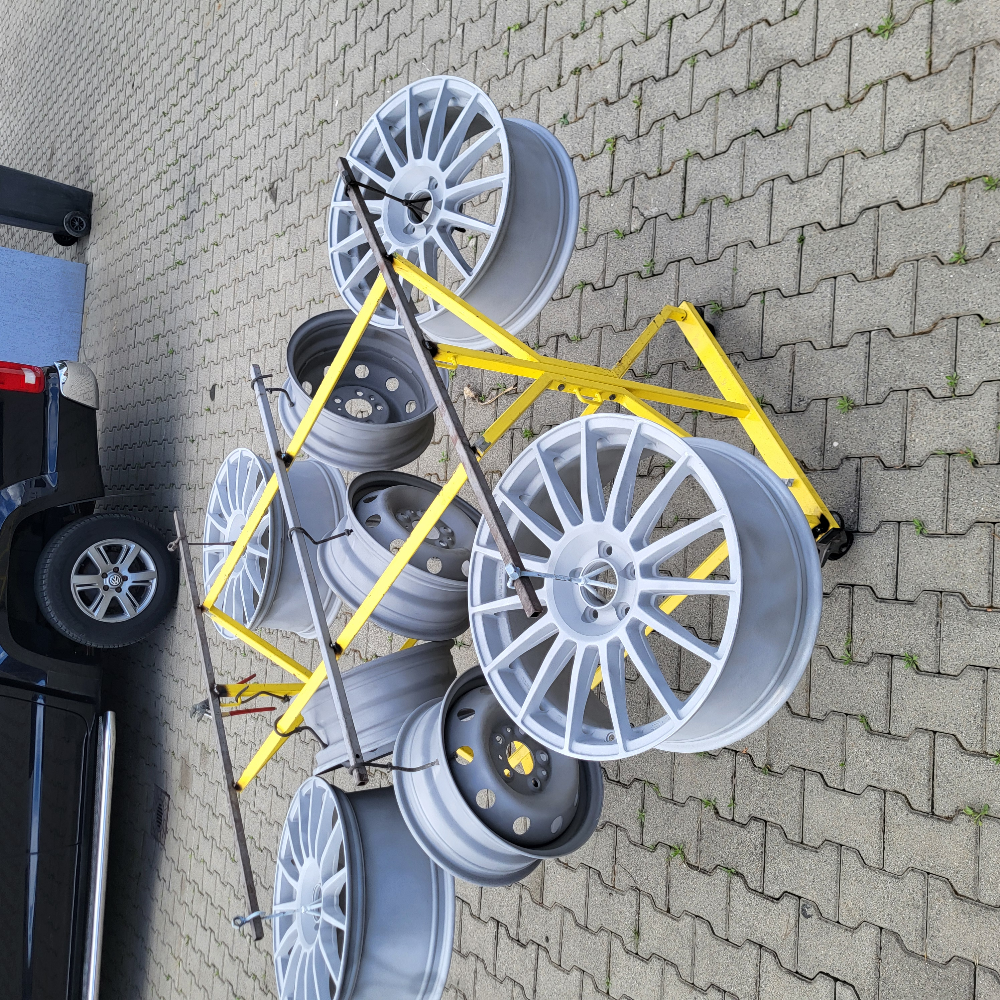

Wulkanizacja, Mechanika i Lakiernia Felg: Ostrzeszów, Kępno, Syców, Ostrów Wlkp.
Ustawiamy zbieżność kół przy użyciu zaawansowanej technologii trójwymiarowej. Nasz serwis obsługuje kierowców z miast takich jak Ostrzeszów, Kępno, Syców, Mikstat oraz Ostrów Wielkopolski. Precyzyjny pomiar gwarantuje pełne bezpieczeństwo, stabilność prowadzenia oraz chroni Twoje opony przed przedwczesnym i nierównym zużyciem.
Zaawansowany system pomiarowy oparty na precyzyjnych markerach pasywnych, odpornych na uszkodzenia mechaniczne.
Kompleksowa weryfikacja geometrii podwozia pod kątem zachowania prawidłowych, fabrycznych wymiarów konstrukcyjnych pojazdu.
Pełna diagnostyka komputerowa, spis kluczowych danych układu jezdnego oraz profesjonalny reset czujników kąta skrętu kierownicy.
Po wykonanej usłudze otrzymujesz czytelny, spersonalizowany raport dla Twojej marki pojazdu z parametrami przed i po regulacji.

Przywracamy fabryczną geometryczną precyzję felgom aluminiowym i stalowym. Usuwamy bicie boczne i promieniowe, eliminując drgania kierownicy oraz nierównomierne zużycie opon.
Nawet mocno uszkodzone felgi po najechaniu na dziurę czy krawężnik mogą zostać uratowane dzięki specjalistycznemu sprzętowi hydraulicznemu.

Oferujemy profesjonalną obróbkę strumieniowo-ścierną elementów stalowych i aluminiowych. Dokładnie usuwamy starą farbę, rdzę i zanieczyszczenia, przygotowując powierzchnię pod idealny lakier w regionie Ostrzeszów, Kępno, Syców, Ostrów Wielkopolski.


Piaskowanie to najważniejszy etap renowacji. Gwarantuje idealną przyczepność powłok malarskich oraz odsłania faktyczny stan techniczny materiału.
Kompleksowa renowacja dostosowana do każdego rodzaju wykończenia. Profesjonalne odnawianie felg dla klientów z okolic Ostrowa Wielkopolskiego, Kępna i Sycowa.
Najwyższa trwałość mechaniczna i odporność na warunki atmosferyczne dzięki aplikacji elektrostatycznej i utwardzaniu w piecu konwekcyjnym.
Profesjonalne lakierowanie systemowe (płynne), dedykowane do uzyskania spektakularnych efektów wizualnych i fabrycznego wyglądu.
Chcesz zobaczyć efekty naszej pracy i porównania Przed / Po?
Zobacz pełną galerię realizacji →